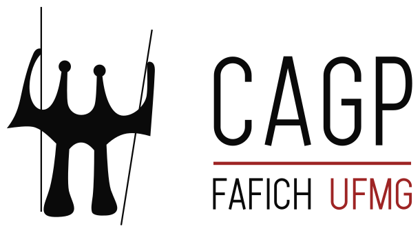

Mapa do Site
Índice estruturado, árvore temática completa e atalhos diretos para todas as áreas do portal do CAGP
Acessibilidade Universal Índice Completo do Portal
MAPA DO SITE DO CAGP UFMG
O portal do Centro Acadêmico de Gestão Pública (CAGP) da Faculdade de Filosofia e Ciências Humanas da UFMG reúne todas as diretrizes normativas, ferramentas interativas de cálculo curricular, matrizes pedagógicas e informações de governança discente.
Utilize esta página como uma visão panorâmica (bird’s-eye view) da arquitetura do site, explore os 5 eixos temáticos ou utilize o campo de busca em tempo real abaixo para localizar instantaneamente qualquer seção ou serviço.

Atalhos de Alta Demanda
Acesso direto às ferramentas interativas, normativas e rotinas operacionais mais consultadas pela comunidade discente:
Calculadora de AAC
Simule seus créditos e aproveitamento de até 300h nas 5 modalidades oficiais.
Abrir Calculadora →Busca de 68 Optativas
Consulte ementas completas com filtros por departamento (DCP, ECN, SOA).
Filtrar Optativas →Circular UFMG ao Vivo
Previsão em tempo real dos ônibus internos no Campus Pampulha via Interno Rotas.
Ver Linhas & Horários →Regimento Interno 2024
Download do PDF oficial aprovado em 14/10/2024 com as 7 diretorias e normas eleitorais.
Baixar PDF Oficial →Secretaria & CEAG 2025/2
Escala da secretária Norma Guedes (F-2039) e plantão do CEAG FAFICH até 22h.
Consultar Horários →11 Grupos do DCP
Catálogo com Rede Femjusp, PUBLICUS, CEPPI, CEL, PRODEP e regras de Iniciação Científica.
Explorar Pesquisa →Árvore Completa em 5 Eixos Estruturais
Hub & Acolhimento
Portal aberto, compromisso ético da chapa, números oficiais do curso (Noturno, 10 períodos, 3.000h) e acessos rápidos.
Orientações de sobrevivência para o noturno (19h–22h30), rotinas de sobrevivência, biblioteca, alimentação e bolsas.
O Curso & Matriz
Histórico institucional (REUNI 2009), nota 4 no CPC/MEC, perfil do egresso, departamentos parceiros e os 11 grupos do DCP.
Linha do tempo oficial dos 10 semestres, 27 obrigatórias com ementas, catálogo das 68 optativas e 3 percursos formais.
Extensão, Estágio & TCC
Curricularização da Extensão (300h), Programa de Imersão, ATLAS Consultoria Jr., 300h de AAC (Art. 15) e calculadora.
Estágio A (180h) e B (120h), dispensa por atuação profissional (Art. 41), 4 modalidades aceitas de TCC e termo de aceite.
Acervo & Ajuda
Repositório digital com 8 PDFs normativos oficiais e Central de Formulários Administrativos da FAFICH para download.
Respostas diretas fundamentadas nas Normas de Graduação sobre trancamento, pré-requisitos, intercâmbio e prazos.
Índice estruturado, conformidade WCAG 2.1 e árvore de navegação com busca instantânea.
O CAGP & Governança Discente
História, monumento Os Candangos de Bruno Giorgi, Princípios do LIMPE, Soberana Assembleia Geral, Junta Eleitoral, as 7 Diretorias Estatutárias, Linha Sucessória, Colegiado do Curso e representação tripartite.
Organograma hierárquico com as 7 diretorias (DIPRE, DIJUR, DIFI, DIAC, DIAP, DICULT, DIMAC), equipe por diretoria, Transparência Ativa (RREO mensal), Atas em Drive aberto e chamada contínua de novos assessores.